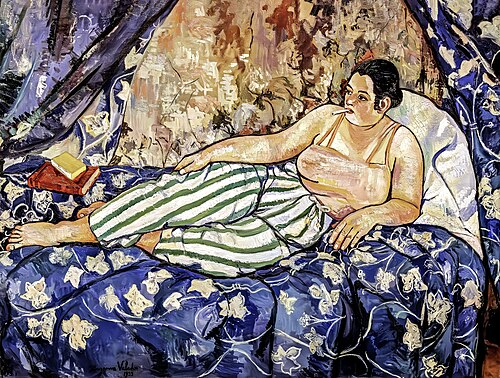
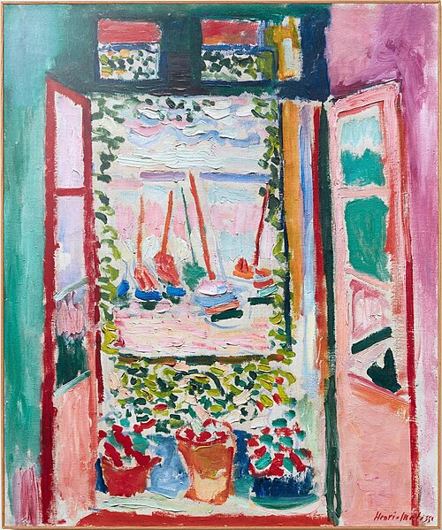
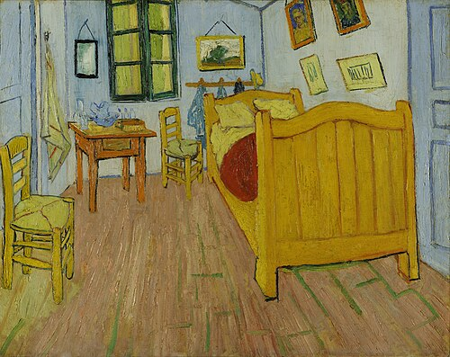
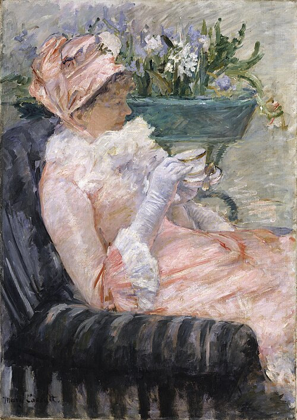
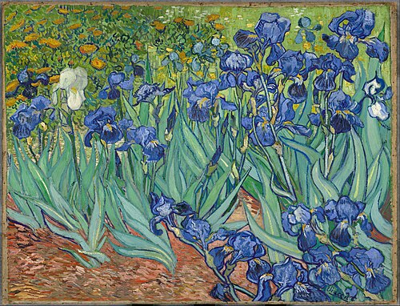
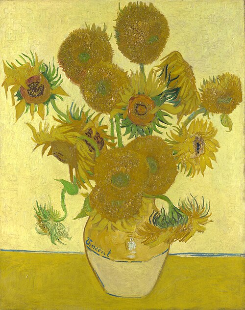
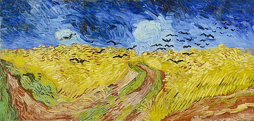
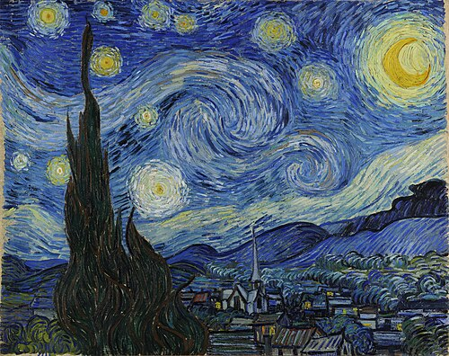
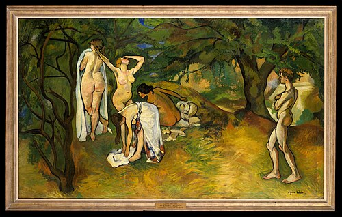
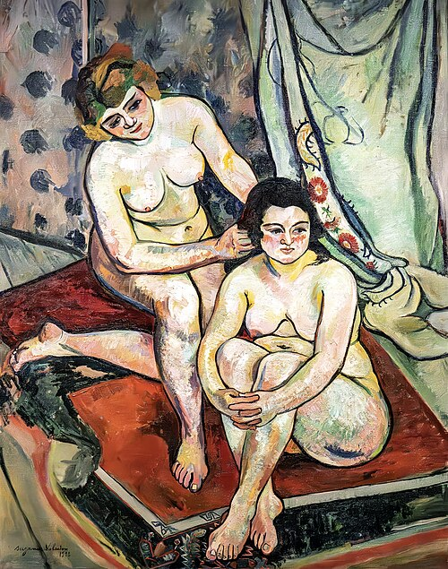

Maya Lieberman
Painter · Tel Aviv · נשלח לפני יומיים




Oil on linen, rooms seen through windows: what stays in a house after the people leave.
השבוע הצטרפו 12 · 8 אמנים באוויר · 143 עבודות
Painter · Tel Aviv · נשלח לפני יומיים




Oil on linen, rooms seen through windows: what stays in a house after the people leave.
Printmaker · Haifa · נשלח לפני 5 ימים


Woodblock prints of the port, in the evening, by hand.
6 עבודות חדשות · הקש על עבודה כדי להסתיר




?

ל־1 מהעבודות חסרות מידות
Maya Lieberman ביקש/ה סיור תלת־ממדי
4 צילומי הצבה · 2 קבצים לסיור · יש סרטון · לפני 3 ימים